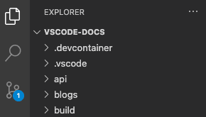
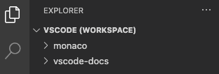
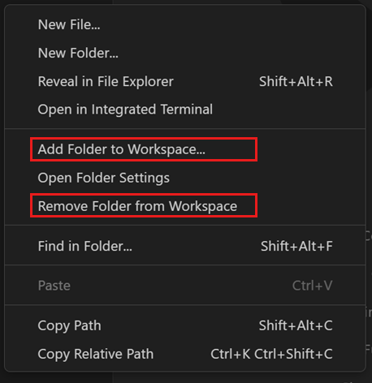
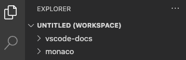
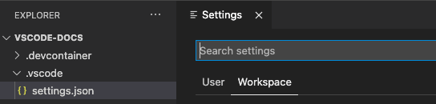
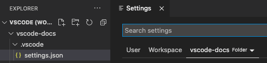

什么是 VS Code 工作区？
Visual Studio Code 工作区是指在 VS Code 窗口（实例）中打开的一个或多个文件夹的集合。在大多数情况下，您会将单个文件夹作为工作区打开。不过，根据您的开发工作流程，您可以使用名为多根工作区的高级配置来包含多个文件夹。
工作区的概念使 VS Code 能够：
- 配置仅适用于特定一个或多个文件夹的设置。
- 持久化仅在该工作区上下文中有效的任务和调试器启动配置。
- 存储和恢复与该工作区关联的 UI 状态（例如，已打开的文件）。
- 仅针对该工作区选择性地启用或禁用扩展。
您可能会在 VS Code 文档、问题和社区讨论中看到"文件夹"和"工作区"这两个术语互换使用。可以将工作区视为具有额外 VS Code 知识和功能的项目根目录。
注意： 也可以在没有工作区的情况下打开 VS Code。例如，当您通过从平台的文件菜单中选择一个文件来打开新的 VS Code 窗口时，您将不会处于工作区中。在这种模式下，VS Code 的某些功能会受限，但您仍然可以打开文本文件并对其进行编辑。
如何打开 VS Code 的"工作区"？
您可以通过使用文件 > 打开文件夹...菜单并选择一个文件夹来打开工作区。
或者，如果您从终端启动 VS Code，可以将文件夹路径作为第一个参数传递给 code 命令来打开。例如，使用以下命令用 VS Code 打开当前文件夹（.）：
code .单文件夹工作区
您无需执行任何操作即可使文件夹成为 VS Code 工作区，只需用 VS Code 打开该文件夹即可。一旦您打开一个文件夹，VS Code 会自动跟踪配置，例如您打开的文件或编辑器布局。当您在 VS Code 中重新打开该文件夹时，编辑器将恢复为您之前离开时的状态。
您还可以添加其他文件夹特定的配置，例如工作区特定的设置（相对于全局用户设置）、任务定义和调试启动文件（请参阅下面的工作区设置部分）。

在 VS Code 中打开的单文件夹工作区
多根工作区
多根工作区是 VS Code 的一项高级功能，允许您将多个不同的文件夹配置为同一工作区的一部分。与将文件夹作为工作区打开不同，您需要打开一个列出了工作区所有文件夹的 <名称>.code-workspace JSON 文件。例如：
{
"folders": [
{
"path": "my-folder-a"
},
{
"path": "my-folder-b"
}
]
}
在 VS Code 中打开的多根工作区
注意： 打开文件夹与打开.code-workspace文件在视觉上的差异可能很微妙。为了提示您已经打开了.code-workspace文件，用户界面的某些区域（例如，文件资源管理器的根节点）会在名称旁边显示一个额外的 (工作区) 后缀。
无标题多根工作区
您可以灵活地添加或删除工作区中的文件夹。首先在 VS Code 中打开一个文件夹，然后根据需要再添加更多文件夹。

文件资源管理器上下文菜单，用于在工作区中添加或删除文件夹
除非您已经打开了一个 .code-workspace 文件，否则当您首次向工作区添加第二个文件夹时，VS Code 会自动创建一个无标题工作区。在后台，VS Code 会自动为您维护一个 untitled.code-workspace 文件，其中包含当前会话中的所有文件夹和工作区设置。该工作区将保持无标题状态，直到您决定将其保存到磁盘。

在 VS Code 中打开的无标题多根工作区
注意： 无标题工作区与已保存的工作区之间没有区别，只是无标题工作区是为了方便您而自动创建的，并且在您保存之前始终会恢复。当您关闭一个打开了无标题工作区的窗口时，VS Code 会自动删除无标题工作区（在征得您确认之后）。
工作区设置
工作区设置使您能够在已打开的工作区上下文中配置设置。工作区设置始终会覆盖全局用户设置。它们在物理上存储在 JSON 文件中，其位置取决于您是打开了文件夹作为工作区，还是打开了 .code-workspace 文件。
有关设置范围及其文件位置的全面说明，请参阅设置文档。
单文件夹工作区设置
当您将文件夹作为工作区打开时，工作区设置存储在 .vscode/settings.json 中。

将文件夹作为工作区打开时的设置编辑器
多根工作区设置
当您将 .code-workspace 作为工作区打开时，所有工作区设置都会添加到 .code-workspace 文件中。
您仍然可以按根文件夹配置设置，设置编辑器将显示第三个设置范围，称为文件夹设置：

打开多根工作区时的设置编辑器
按文件夹配置的设置会覆盖 .code-workspace 中定义的设置。
工作区任务和启动配置
与工作区设置特定于工作区类似，任务和启动配置也可以限定在工作区范围内。
根据您是将文件夹作为工作区打开还是打开了 .code-workspace 文件，工作区任务和启动配置的位置要么在 .vscode 文件夹内，要么在 .code-workspace 文件内。此外，即使您已经打开了 .code-workspace 文件，任务和启动配置也始终可以在文件夹级别定义。
有关如何在 VS Code 中使用任务和启动配置的更全面概述，请参阅任务和调试章节。
常见问题
多根工作区相比单文件夹有什么优势？
最明显的优势是，多根工作区允许您处理可能不在磁盘上同一父文件夹内的多个项目。您可以从任何位置选择文件夹添加到工作区。
即使您主要在单文件夹项目上工作，使用 .code-workspace 文件也能带来好处。您可以在文件夹内存储多个 .code-workspace 文件，以便根据场景提供项目某些方面的限定文件夹视图（例如 client.code-workspace、server.code-workspace 来从文件资源管理器中过滤掉不相关的文件夹）。由于 .code-workspace 文件的 folders 部分支持相对路径，这些工作区文件适用于所有人，与文件夹的存储位置无关。
最后，如果您希望对某些项目应用同一组工作区设置或任务/启动配置，可以考虑将这些设置添加到 .code-workspace 文件中，然后在该工作区中添加或删除这些文件夹。
为什么 VS Code 在重启时会恢复所有无标题工作区？
无标题工作区的设计初衷是让您必须明确决定保留或不保留。当无标题工作区首次创建时，VS Code 会将指定的文件夹添加到工作区文件中，同时也会添加所有现有的工作区设置。这些用户数据始终会被恢复并显示在 VS Code 窗口中，直到无标题工作区被保存或删除。
如何删除无标题工作区？
您可以通过关闭无标题工作区的窗口并拒绝保存无标题工作区的提示来删除无标题工作区。
我可以在没有文件夹的情况下使用多根工作区吗？
可以将 .code-workspace 文件的 folders 部分留空，这样您将得到一个不显示任何根文件夹的 VS Code 实例。在这种情况下，您仍然可以存储工作区设置，甚至任务或启动配置。
VS Code 是否支持项目或解决方案？
VS Code 没有其他开发工具（如 Visual Studio IDE）中有时定义的"项目"或"解决方案"的概念。您可能会在 VS Code 文档中看到"项目"一词，但它通常表示"您正在处理的内容"。根据您的编程语言或框架，工具集本身可能支持称为"项目"的东西，以帮助定义构建配置或枚举包含的文件。